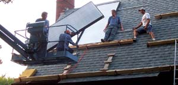

CROMWELL & RAMSEY ENVIRONMENTAL
With proper design and careful installation, a solar water-heating system can provide a large percentage of a home’s hot water for many years with little maintenance.